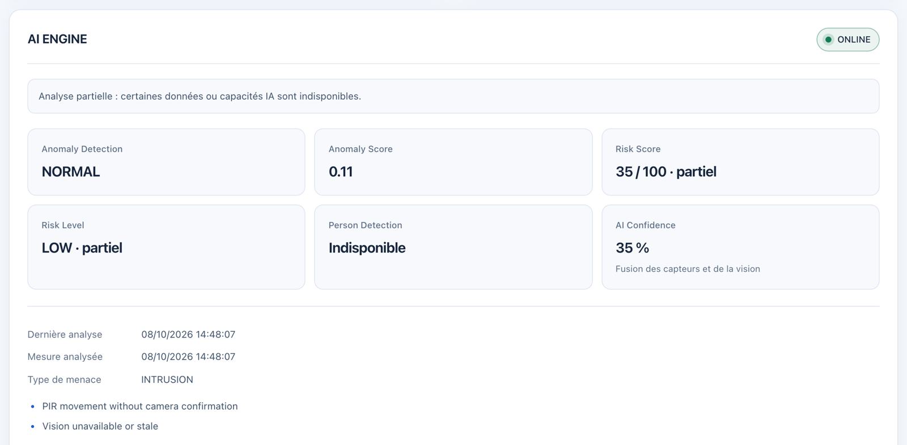

Boîtier de surveillance autonome Sentinel-X et son Centre de Commandement Tactique : schémas réseau et électronique, matrice de sécurité, documentation de l'IA, rapport d'audit et poster A3.
Sentinel-X est un boîtier de surveillance autonome destiné aux micro-centrales d'AetherCorp. Il détecte trois familles de menaces : environnementales (gaz, température, humidité), intrusions physiques (mouvement, présence humaine à la webcam) et cyberattaques, contre lesquelles la chaîne logicielle est chiffrée et durcie.
Deux écarts majeurs sont détaillés en section 9. La liaison ESP8266 → serveur passe par USB série et non en Wi-Fi MQTTS, alors que le chiffrement de ce lien est obligatoire. Les commandes d'actionneurs du dashboard n'atteignent pas le boîtier. Une version MQTTS du firmware avec réception des commandes existe dans l'historique Git (commit d83e871).
| Membre | Responsabilités |
|---|---|
| Naouar | Mise en production, cybersécurité et réseau : installation et configuration du Raspberry Pi, déploiement de l'infrastructure |
| Mohammed | Assemblage des composants électroniques (avec Thibault), IA de reconnaissance faciale |
| Thibault | Backend, montage et design du boîtier, management du projet |
| Alexis | Organisation, frontend (dashboard de supervision) |
| Segment | Plage | Rôle |
|---|---|---|
Wi-Fi de table (AP sur wlan0) | 192.168.10.0/24, passerelle 192.168.10.1, DHCP .100–.199 | Postes superviseurs ; réseau isolé des autres tables, sans routage vers l'extérieur |
Docker edge | 172.30.10.0/24 | nginx et backend ; seul segment relié aux ports publiés |
Docker core | 172.30.20.0/24, internal | Broker, IA, passerelle USB, et backend comme client ; aucune sortie Internet |
Docker mqtt-host | 172.30.30.0/24 | Publication du broker sur 127.0.0.1:8883 uniquement |
Les valeurs surlignées suivent le plan proposé par le sujet. Elles sont à confirmer par Naouar d'après la configuration réelle du point d'accès (SSID, WPA2/WPA3, plage DHCP).
| Source → destination | Port | Protocole | Authentification |
|---|---|---|---|
| Poste → nginx | 80 | HTTP, redirection 301 uniquement | — |
| Poste → nginx | 443 | HTTPS TLS 1.2/1.3, HSTS | Session Better Auth |
| Administrateur → hôte | 22 | SSH | Clé asymétrique uniquement |
| nginx → backend | 3001 | HTTPS, certificat vérifié | IP client de confiance limitée à nginx |
| backend → mosquitto | 8883 | MQTTS | Compte backend + ACL |
| bridge → mosquitto | 8883 | MQTTS | Compte bridge + ACL |
| backend → ai | 8001 | HTTPS, certificat vérifié | Jeton Bearer |
| backend → relais SMTP | 587/465 | STARTTLS exigé ou TLS | Compte SMTP (facultatif) |
| ESP8266 → bridge | USB | Série 115200 bauds | Accès physique |
firmware/include/sentinel_config.h. Toutes les masses sont communes.| Composant | Broche ESP8266 | Alimentation | Points d'attention |
|---|---|---|---|
| DHT22 | D5 (GPIO14) | 3V3 | Pull-up 10 kΩ sur DATA si capteur nu (intégrée aux modules) ; 2 s minimum entre deux lectures |
| MQ-2 | A0 (ADC 10 bits) | 5 V | A0 du NodeMCU : 0 à 3,3 V. Si AO peut dépasser 3,3 V, ajouter un pont diviseur. Chauffe : 60 s |
| PIR HC-SR501 | D6 (GPIO12) | 5 V | Sortie 3,3 V compatible ; calibration : 45 s |
| OLED SSD1306 | D2 SDA (GPIO4), D1 SCL (GPIO5) | 3V3 | Acquittement I2C vérifié, nouvelle tentative toutes les 5 s |
| Buzzer | D7 (GPIO13) | — | Actif à l'état haut |
| LEDs verte / rouge / orange | D0 (GPIO16) / D4 (GPIO2) / D8 (GPIO15) | — | Résistance série par LED ; D8 doit rester bas au démarrage (strapping) |
Valeurs des résistances et rails d'alimentation à reporter d'après le montage réel par l'équipe électronique (Mohammed, Thibault).
Les trois applications (firmware, backend, frontend) suivent une architecture propre : le domaine et les cas d'usage sont isolés des adaptateurs (GPIO, MQTT, HTTP, SQLite).
millis().Elle détecte automatiquement le port série, réassemble les blocs avec des limites de taille et de temps, puis publie sur esp8266/donnees en MQTTS avec son propre compte. Elle gère le débranchement et le rebranchement à chaud. Exemple de charge utile :
{"climateValid":true,"temperature":21.5,"humidity":40,"gasReady":true,"gas":312,
"pirReady":true,"presence":false,"gasAlert":false,"alarmActive":false,
"ledRed":false,"ledOrange":false,"ledGreen":true}Route (sous /api, session obligatoire) | Rôle |
|---|---|
GET /status, GET /readings | État du boîtier, historique SQLite des mesures |
GET /stream | Temps réel par Server-Sent Events : mesures, IA, vision |
POST /action | Commande d'actionneur publiée sur esp8266/led (voir l'écart E2) |
GET /ai/status|latest|history, GET /vision | Analyses IA, détections, flux MJPEG authentifié |
GET|PUT /settings/notifications | Destinataire des alertes e-mail |
/auth/*, GET /health | Better Auth (inscription publique désactivée), sonde de santé |
Les mesures sont horodatées, stockées dans SQLite (rétention de 7 jours par défaut), transmises à l'IA dans l'ordre puis diffusées au dashboard. Chaque commande est journalisée avec l'e-mail de son auteur.
Trois pages : Métriques (état du boîtier, courbes temps réel, historique de chaque capteur, panneau IA), Caméra (flux annoté, détections, reconnaissance faciale) et Paramètres (notifications). Thème clair ou sombre, indicateur de connexion au broker.
Service Python FastAPI, exécuté localement sur le PC Serveur Local, sans appel au cloud. Les poids des modèles sont téléchargés à la construction et vérifiés par empreinte SHA-256.
| Étape | Modèle / technique | Paramètres |
|---|---|---|
| Capture | OpenCV, webcam USB du serveur | Redimensionnement systématique en 640×480, 15 FPS maximum |
| Détection de personnes | YOLOv8n (classe « person » uniquement) | Confiance ≥ 0,55 ; une image sur 3 analysée |
| Suivi | ByteTrack | Identifiant par personne ; alerte confirmée après 3 détections consécutives |
| Reconnaissance faciale | YuNet (détection) + SFace (embeddings) | Similarité cosinus ≥ 0,55 avec les photos de référence ; sinon « Inconnu » |
La capture, YOLO et la reconnaissance faciale tournent dans des workers séparés : une inférence lente ne bloque ni le flux vidéo ni les autres analyses.
| Mesure (image 640×480, 20 itérations, conteneur de production) | Médiane |
|---|---|
| YOLOv8n — poste de développement Apple M1, CPU | 133,6 ms (p95 222,9 ms) |
| YuNet — poste de développement Apple M1, CPU | 49,0 ms |
| Raspberry Pi 5 | à mesurer |
L'objectif de 100 ms par trame n'est pas atteint par YOLOv8n en pleine résolution sur CPU. L'analyse d'une image sur trois garde le flux fluide ; les pistes d'optimisation sont en section 9.
Aucune règle statique de type if temp > 40 : l'anomalie est apprise par un Isolation Forest (scikit-learn, 200 arbres, contamination 0,03) entraîné sur des périodes normales réelles validées.
Les indices d'intrusion (mouvement PIR, personnes détectées par YOLO) et d'environnement (anomalie corrélée gaz/température) sont fusionnés en un score de 0 à 100. Les niveaux sont SAFE < 25, LOW < 50, MEDIUM < 75, HIGH < 90, puis CRITICAL. Les catégories sont INTRUSION, ENVIRONMENT, SENSOR_ANOMALY et MULTI_THREAT (+12 points). Une donnée périmée est ignorée et l'analyse est alors marquée « partielle ». Ces scores sont des indices démonstratifs, pas des probabilités calibrées.

| Liaison | Chiffrement | Authentification | Statut |
|---|---|---|---|
| Navigateur → nginx | TLS 1.2/1.3, ECDHE + AES-GCM/ChaCha20, HSTS 1 an | Cookie __Secure- HttpOnly | Conforme |
| nginx → backend | TLS, certificat vérifié par la CA | Réseau interne | Conforme |
| backend / bridge → mosquitto | MQTTS, nom d'hôte vérifié | Comptes distincts + ACL | Conforme |
| backend → ai | TLS, certificat vérifié | Jeton Bearer | Conforme |
| ESP8266 → serveur | Aucun (USB série) | Accès physique | Écart E1 |
Une autorité de certification locale (ECDSA P-256) est créée au premier démarrage. Chaque service reçoit un certificat de 397 jours, renouvelé automatiquement 30 jours avant son expiration.
| Couche | Mesure |
|---|---|
| Hôte | SSH par clé uniquement (PasswordAuthentication no, PermitRootLogin no), UFW en refus par défaut (22, 80, 443), mises à jour de sécurité automatiques |
| Exposition | Seuls 80 (redirection) et 443 sont publiés ; broker sur 127.0.0.1 ; backend et IA non publiés |
| Conteneurs | Utilisateur non-root distinct par service, système de fichiers en lecture seule, toutes capacités Linux retirées, no-new-privileges, accès matériel limité par règles cgroup (série, vidéo), aucun conteneur privilégié |
| Réseau Docker | Segment core interne sans Internet ; segmentation edge / core |
| Application | Inscription désactivée, mots de passe de 12 caractères minimum, 5 tentatives par minute et par IP, vérification de l'origine, CSP stricte, X-Frame-Options: DENY, limitation du débit par nginx |
| MCO | Journaux limités à 3 × 10 Mo par service, broker sans persistance disque, sondes de santé, redémarrage automatique |
Aucun secret dans le dépôt ni dans un fichier à compléter. Clé de session, jeton IA, mots de passe MQTT et mot de passe administrateur initial sont générés aléatoirement (de 96 à 256 bits) dans un volume dédié. Chaque fichier a un propriétaire unique et des droits 0400 ; les secrets sont lus via des variables *_FILE et n'apparaissent pas dans docker inspect.
Date : 8 octobre 2026. Périmètre : stack de production déployée depuis une installation vierge du dépôt. Outils : Nmap 7.98 (scan TCP complet, ssl-enum-ciphers), OpenSSL 3, clients Mosquitto 2.0.22, curl. Les tests ont été lancés depuis les réseaux Docker, pour simuler un attaquant du LAN et un service compromis.
| Attaque / contrôle | Résultat observé | Verdict |
|---|---|---|
| Scan TCP 1–65535 du frontal | 8080 (redirection) et 8443 (TLS) seulement | OK |
| Accès au broker et à l'IA depuis le segment frontal | Noms non résolus, aucune route | OK |
| Énumération TLS nginx et Mosquitto | TLS 1.2/1.3 uniquement, toutes suites notées A ; TLS 1.0/1.1 refusés (alerte 70) | OK |
| Interception (MitM) : client sans la CA | Connexion MQTTS refusée | OK |
| MQTT anonyme, mauvais mot de passe, en clair sur 1883 | Refusés | OK |
Injection de commande : bridge publie sur esp8266/led | Rejeté par l'ACL (code 135) | OK |
| API sans session ; origine étrangère | 401 ; 403 | OK |
Force brute avec X-Forwarded-For falsifié | 429 dès la 5e tentative | OK |
| En-têtes de sécurité HTTPS | HSTS, CSP, X-Frame-Options: DENY présents | OK |
| Service compromis (IA) : lecture du secret de session | Permission refusée | OK |
Service compromis : sortie Internet depuis core | Impossible (aucune résolution DNS) | OK |
| Écriture dans le conteneur backend | Système de fichiers en lecture seule, uid 1000 | OK |
| # | Constat | Gravité | Recommandation |
|---|---|---|---|
| A1 | Lien ESP8266 → serveur non chiffré (USB série) ; un accès physique au câble permet de lire ou d'injecter des mesures | Élevée | Restaurer le firmware Wi-Fi MQTTS avec CA épinglée et compte dédié (écart E1) |
| A2 | Backend joignable en HTTPS depuis le segment frontal (nécessaire au proxy) | Faible | Accepté : authentification et TLS obligatoires, segment non publié |
| A3 | Clé privée de la CA sur le même hôte que les services | Faible | Sauvegarde chiffrée hors serveur ; en production réelle, CA hors ligne |
| A4 | Déni de service sur le Wi-Fi (désauthentification) hors du périmètre logiciel | Moyenne | WPA3 / PMF sur le point d'accès ; l'alarme locale du boîtier reste autonome |
À compléter avec les attaques effectivement menées par les autres groupes contre notre table, et avec nos propres attaques.
| Groupe attaquant | Technique (Nmap, Wireshark, Metasploit…) | Cible | Résultat | Correctif |
|---|---|---|---|---|
| Exigence | Réalisation | Statut |
|---|---|---|
| Firmware C++ ESP8266, capteurs cadencés, OLED | PlatformIO, DHT22, MQ-2, PIR, SSD1306, tests natifs | Conforme |
| API REST / WebSocket, historique | Express, REST + SSE, SQLite | Conforme |
| Dashboard : courbes temps réel, statut, webcam | React, trois pages, flux MJPEG authentifié | Conforme |
| Contrôle réactif des actionneurs à distance | Panneau présent, commande publiée, mais non relayée jusqu'à la carte | Écart E2 |
| Vision : présence humaine en temps réel | YOLOv8n + ByteTrack ; reconnaissance faciale en plus | Conforme |
| Maintenance prédictive sans seuils statiques | Isolation Forest, 13 variables temporelles | Conforme |
| Images 640×480, < 100 ms par trame | 640×480 ; 134 ms sur M1, 1 image sur 3 analysée | Partiel E3 |
| Stack Docker Compose (base, API, Mosquitto) | 6 services isolés ; base SQLite embarquée dans l'API | Conforme |
| Point d'accès Wi-Fi et plan d'adressage | Réalisés sur le Raspberry Pi ; configuration absente du dépôt | À documenter E4 |
| TLS ESP8266 ↔ stack (obligatoire) | TLS partout à partir de la passerelle ; liaison ESP en USB | Écart E1 |
| Hardening : UFW, SSH par clé, privilèges Docker | Procédure fournie ; conteneurs durcis et vérifiés | Conforme |
| Monitoring et MCO | Sondes de santé, rotation des journaux, docker stats | Partiel |
| Audit et rapport post-pentest | Auto-audit réalisé ; pentest croisé à reporter | À compléter |
| Dépôt propre, README, aucun secret en clair | Secrets générés au déploiement, README par projet | Conforme |
d83e871 publie déjà en MQTTS (CA épinglée, compte dédié) et reçoit les commandes sur esp8266/led. Il faut le réintégrer à l'architecture actuelle, créer un compte esp8266 dans l'ACL et ouvrir le port 8883 sur l'interface Wi-Fi uniquement. Cela résout le chiffrement obligatoire et le contrôle à distance.imgsz=320), export ONNX ou NCNN pour le Raspberry Pi 5, et mesure sur la cible.| Projet | Tests automatisés | Résultat |
|---|---|---|
| Firmware (runner natif, configurations par défaut et surchargées) | 10 suites | 10/10 |
| Passerelle USB | 28 | 28/28 |
| Backend | 85 | 85/85 |
| Frontend (et lint, build) | 39 | 39/39 |
| Service IA | 127 | 127/127 |
Déploiement : docker compose up -d --build suffit, sans fichier de configuration. Le service init crée la PKI et les secrets, puis tous les services démarrent et deviennent sains en moins de 25 secondes une fois les images construites. Cela a été vérifié depuis un clone vierge du dépôt, sans cache. La procédure de mise en production et le guide de déploiement sont dans docs/pdf/, avec les documentations technique et utilisateur de chaque projet.
Sentinel-X surveille les micro-centrales isolées contre trois menaces simultanées : fuites de gaz et surchauffes, intrusions physiques, cyberattaques. Le boîtier ESP8266 capte et alerte localement ; le Raspberry Pi 5 analyse, chiffre, stocke et supervise.